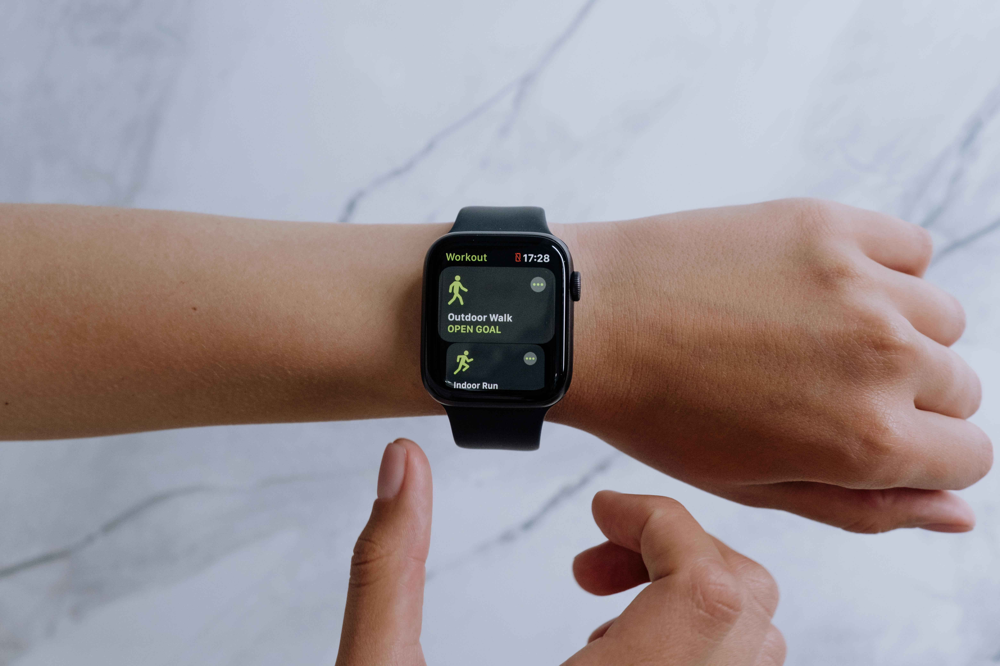
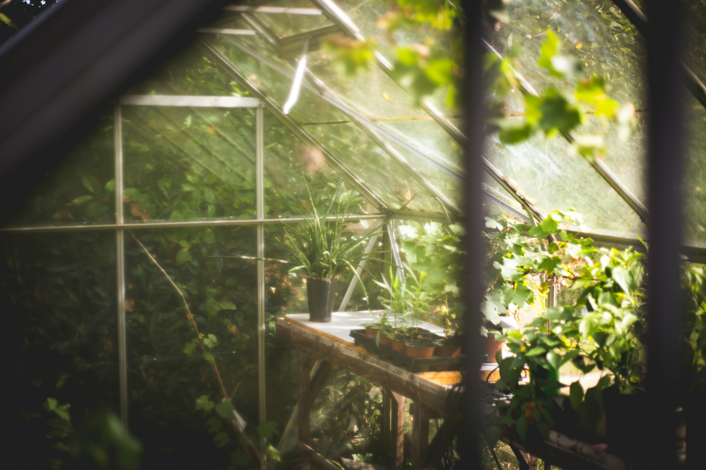
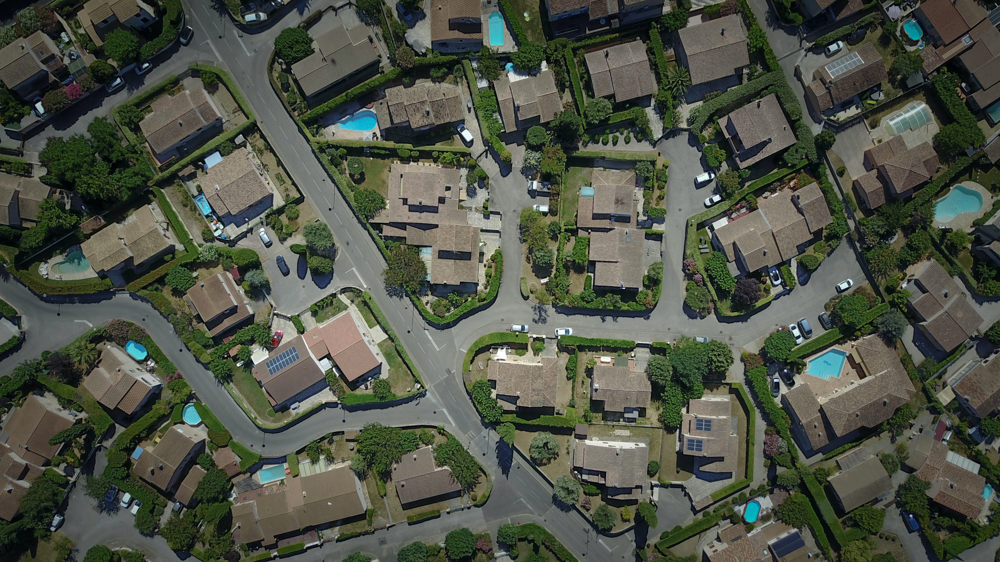
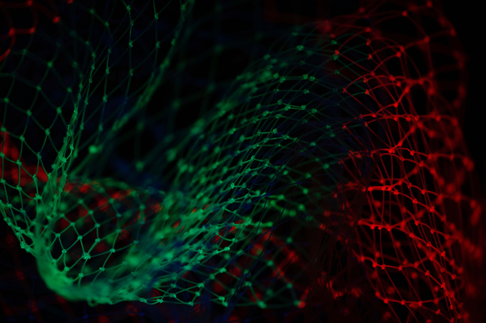

EDGE INTELLIGENCE · TINYML
Activity Recognition on a Memory-Constrained Smartwatch
Exploring activity recognition on wearable hardware with attention to model performance and resource constraints.
View projectEMBEDDED SYSTEMS · INDUSTRIAL IOT
I'm Saju Khakurel, an engineer working across embedded firmware, connected devices, and industrial IoT. I recently completed the EMINENT Erasmus Mundus joint master's programme, building on my Electronics and Communication Engineering background.


EDGE INTELLIGENCE · TINYML
Exploring activity recognition on wearable hardware with attention to model performance and resource constraints.
View project
IOT · SYSTEM INTEGRATION
A connected monitoring and control project combining sensors, messaging, and a dashboard.
View project
EMBEDDED SYSTEMS · FIRMWARE
Embedded firmware work focused on updating devices and maintaining software over the device lifecycle.
View projectROBOTICS · CONTROL
A robotics project bringing together sensing, actuation, and control for a practical task.
View project
ROBOTICS · MAPPING
Exploring core concepts in robotic mapping and understanding an environment.
View project
MACHINE LEARNING · SIGNALS
Applying deep learning methods to the classification of communication signals.
View projectMY INTERNATIONAL JOURNEY
Completing the EMINENT Erasmus Mundus joint master's programme meant learning across disciplines, universities, and cultures. It connected my engineering foundations with sensors, embedded systems, IoT, and robotics.
Explore EMINENTFrom Nepal to Europe, each stage has shaped how I approach engineering and collaboration.
Greece
The beginning of the programme and its foundations in functional materials and nanotechnology.
Germany
Further study in sensors and embedded systems, alongside engineering research and my master's thesis.
France
Specialisation in Internet of Things and Robotics, including connected systems projects.
2026
Joint degree awarded by the partner universities at which I studied.
LET'S CONNECT
I'm happy to connect with people working on embedded engineering, IoT, and intelligent systems.